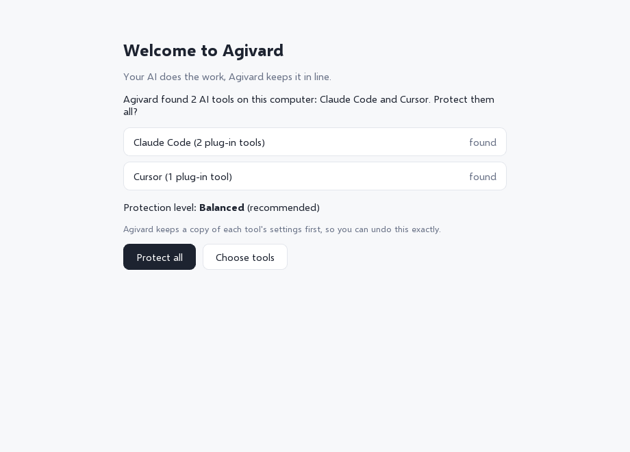

A local firewall between your AI coding agent and your computer
Agivard watches what Cursor, Claude Code and Grok Bot try to run — and stops the scary stuff in plain English before it hits your disk.
Runs 100% on your machine. No account. No telemetry.
What it stops
Wiping the project
rm -rf, git clean -fdx, formatters aimed at the wrong path.
Force-push & history rewrites
git push --force, hard resets on shared branches.
Leaking keys
API tokens and .env contents heading to unknown sites.
Fake packages
Typosquats and brand-new empty packages on npm, PyPI and crates.io.
Prompt injection via tools
Hostile plug-in replies that try to steer the agent into unsafe actions.
Stays quiet when it should
Routine builds, tests and edits pass without nagging (Balanced mode).
See it catch a bad command
An agent tries git clean -fdx. Agivard pops up in plain English. A normal command goes through.


Download
Version 0.1.0-beta.1 · unsigned developer builds · release notes & checksums
How to open an unsigned beta
macOS
- Open the
.dmgand drag Agivard into Applications. - First launch: right-click Agivard → Open, or go to System Settings → Privacy & Security → Open Anyway.
Windows
- Unzip the download.
- If SmartScreen appears: More info → Run anyway.
Linux
.deb: sudo dpkg -i agivard-*.deb- AppImage: chmod +x then run it. Needs WebKitGTK.
Setup in 3 steps
- Install & open Agivard. Keep the helper next to the app (the zip/dmg already does this).
- Connect your AI tools. One click for Cursor and Claude Code. Optional guard for Grok Bot on Mac.
- Keep Balanced mode. Work as usual. When something risky shows up, read the pop-up and decide.

Privacy
Nothing leaves your machine except optional package-name lookups to npm, PyPI, crates.io and OSV.dev when you install packages. No accounts. No analytics. No phone-home licence check.
Feedback is opt-in via GitHub issues. The app never sends it for you.
FAQ
Is this free?
Yes for the developer beta. Use it, break it, tell us what went wrong.
Will it slow my agent down?
Checks are local and fast. Balanced mode stays quiet on ordinary work (our harness measures ~0 prompts per simulated day on routine commands).
What if Agivard crashes?
Hooks fail open — your AI tool keeps working. Agivard never holds the tool hostage.
Where is the source?
Agivard is proprietary. This site only ships the beta binaries and docs. Third-party open-source licences are listed in THIRD-PARTY-NOTICES.
How do I report a false alarm?
Use Send feedback, pick “Wrong block / false alarm”, and paste the command.